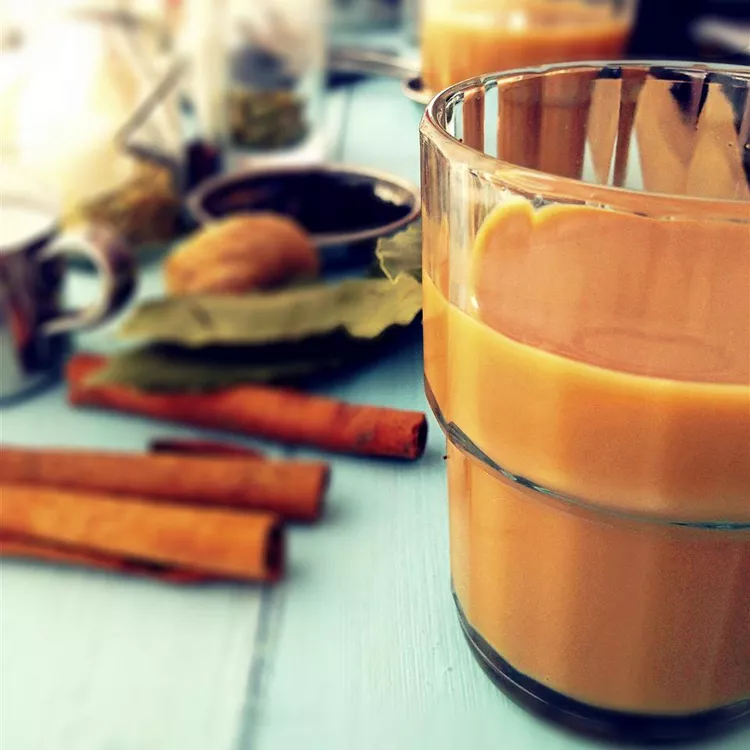

Himalyan Tea Recipe

Description
Milk, black tea, cardamom, cinnamon, and cloves are simmered together in this recipe for hot and spicy chai tea.
Ingredients
- 7 cups water
- 6 tablespoons light brown sugar
- 1 ¼ inch piece fresh ginger root, peeled and chopped
- 1 cinnamon stick
- 6 green cardamom pods
- 12 whole cloves
- 2 bay leaves
- 1 tablespoon fennel seeds
- ½ teaspoon black peppercorns
- 2 tablespoons Darjeeling tea leaves
- 1 cup milk
Steps
- Combine water, brown sugar, ginger, cinnamon stick, cardamom pods, cloves, bay leaves, fennel seeds, and peppercorns together in a pot; cover and boil for 20 minutes.
- Remove from the heat, add tea leaves, and allow to steep for 10 minutes. Stir milk into tea mixture and bring to a boil. Strain tea into tea cups.
Home